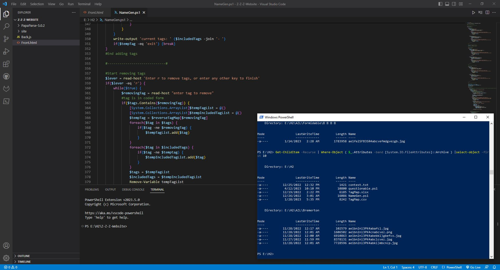

A SQL server oriented project.
In this project, the Doxadvisors' migration team and I
worked collaboratively to improve remote work capabilities, document security, and compliance.
Due to confidentiality constraints, the original project cannot be publicly shared. However, I
have developed small demo scripts that incorporate personal modifications, closely resembling
the original project. These demos serve to showcase and illustrate the functionality of the
project, providing a glimpse into its capabilities.

Regression Analysis and Results Visualization

A R and Latex oriented project.
A comprhensive data exploration, regression and classification analysis
on a housing dataset.
The project includes an exploratory analysis, five regression and classification
modelling classes each and personal interpretations and summaries.
Attribute-based File Management Toolkit

Currently a PowerShell and JS oriented project.
Embarking on this project with minimal prior
PowerShell knowledge, my initial intention was to play around with PowerShell. Overtime, it evolved into
a small-scale project where I integrate and apply the knowledge I acquired, thereby enhancing the script's functionality.

With a keen eye for detail and a passion for uncovering insights, Alvis is well equipped to populate
this area with a personal project inspired from your organization. Let's connect and discover how Alvis can contribute to your
organization's success!